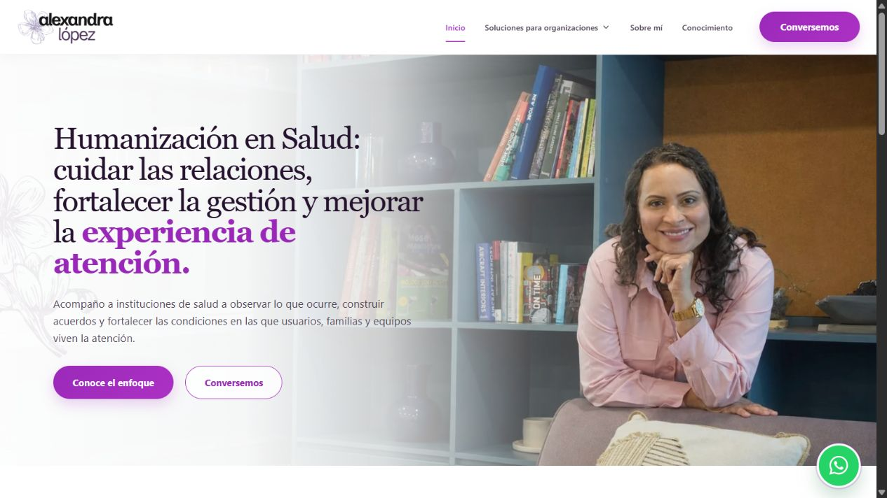

Explorar sitioSitio publicado
Sitio web · Humanización en salud
Alexa López.
Sitio web de Alexandra López que presenta su enfoque de humanización en salud, sus servicios para organizaciones y sus canales de contacto.
Visitar proyecto (abre en una nueva pestaña)